Texto 08 – Eras geológicas e estrutura interna da Terra.
Conteúdo: Crosta terrestre, manto, núcleo externo, núcleo interno,
Princípio de isostasia, Correntes de convecção, Campo magnético, grau geotérmico; Eras geológicas: Azoica,
Pré-Cambriano, Paleozoica, Mesozoica, Cenozoica.
Objetivo: Comparar a escala geológica do tempo (eras geológicas) com a
temporalidade da história humana. Entender como funciona as camadas internas da Terra.
Digite seu nome
Introdução
Na aula passada, vimos como o sensoriamento remoto, o
geoprocessamento e a cartografia digital alteraram profundamente a maneira como conhecemos a superfície
terrestre.
Na lição de hoje, vamos fazer um retorno ao passado e conhecer a formação do nosso Planeta
e de suas estruturas internas. Veremos o que existe abaixo da crosta terrestre e como isso influencia na
vida humana.
Ao final, com ajuda dos exercícios, você será capaz de distinguir as camadas internas da
Terra e as eras geológicas que duraram milhões de anos.
Questões para serem respondidas no caderno sobre o tema da aula de hoje:
1. Qual é a teoria que explica a origem do universo e quantos anos atrás ela ocorreu?
2. Qual é a idade estimada da Terra segundo os cientistas?
3. O que são eras geológicas e qual é a sua importância no estudo da Terra?
4. Quais são os períodos que compõem as Eras Pré-Cambrianas?
5. Quais foram os principais eventos que ocorreram durante o período Proterozoico?
6. Que mudanças significativas ocorreram na Era Paleozoica?
7. Qual foi o evento mais significativo no período Carbonífero?
8. O que causou a extinção em massa no final do período Permiano?
9.Por que o período Jurássico é significativo na Era Mesozoica?
10. Qual é a importância do campo magnético da Terra?
Duvid - Entrevista
Essa semana temos a honra de receber o Planeta Terra.
Duvid: Bem-vindo Planeta Terra. Nós estamos aqui para sabermos mais sobre
sua história e sobre como podemos contribuir para seu funcionamento, já que nós, humanos, como podemos
dizer, habitamos em sua superfície.
Terra: Agradeço a todos pela preocupação com meu bem-estar. Sim, de fato
os humanos, apesar de terem chegado recentemente, já ocupam uma parte considerável de minha superfície. Mas
eu sou também a morada de uma infinidade de outros organismos vivos.
Duvid: De início, acho que podemos chamá-lo de Terra, Globo Terrestre,
Planeta, Astro, como prefere ser chamado?
Terra: Creio que Terra é um bom nome. Apesar de minha superfície ter ¾ de
água, meu interior é repleto de conteúdo rochoso, pastoso e sólido.
Duvid: Bom, isso é muito interessante e é algo que sempre tivemos
curiosidade, isto é, como é no interior da Terra, pois nós humanos só conseguimos escavar um buraco de,
aproximadamente, 12 km de profundidade, próximo ao Círculo Polar Ártico na Rússia. Na realidade, como foi
sua formação inicial, como nasceu a Terra?
Terra: Eu confesso que tive um passado um pouco conturbado, apesar de hoje
estar bem calmo. Eu tenho cerca de 4,5 bilhões de anos. Apesar de ser um Planeta, também tenho dúvidas sobre
minha origem, pois desde a Grande Explosão há 14 bilhões de anos atrás, tem acontecido diversas
transformações no Sistema Solar. Eu brinco com meu irmão mais velho, Júpiter, que ele é o maior de todos e
deve saber como nós todos surgimos.
Terra: Na sua infância, se é que podemos falar assim, sua aparência mudou
muito com o passar desses bilhões de anos?
Terra: Mudou radicalmente. Eu era praticamente uma bola de fogo, não
parava de soltar explosões por toda parte. Eu era muito agitado também. É que o universo estava muito
movimentado naquela época e diversos corpos celestes se chocavam uns contra os outros. Era uma loucura
mesmo. Todo esse choque me deu bastante energia, que acumulei em forma de calor. Como eu possuo muitos
elementos radioativos em meu interior, já viu, eu era uma bomba ambulante.
Duvid: E como essa fase de turbulência passou?
Terra: Após grandes impactos que recebi, parte de mim se fundiu e era
praticamente um oceano de lava em minha camada externa. Um pouco mais abaixo houve um aquecimento, vamos
dizer, mais leve (menos denso), e alguns componentes podem se mover de um lado para o outro. O material mais
pesado que tenho está bem no interior e forma meu núcleo. Como eu formei uma crosta, mesmo assim continuava
a expelir material muito quente. Por isso, eu acabei por me resfriar com o passar de alguns bilhões de anos.
Vamos dizer que essa fase foi como a adolescência dos humanos, é conturbada, mas passa.
Duvid: Fascinante essa história! Mas o que aconteceu depois, nos 4,5
bilhões de anos seguintes?
Terra: É uma longa história e os humanos possuem apenas uma ideia geral
sobre ela. Como disse, passei os primeiros 700 milhões de anos praticamente em um campo de guerra com os
bombardeios de asteroides, lembro ainda quando a Lua nasceu, se desprendendo de mim, recordo do impacto que
foi, do vulcanismo, pois estava formando meu interior. Depois disso, vivi muito tempo recluso para poder
descansar até começar a criar a atmosfera, que era bem primitiva ainda, e os primeiros organismos vivos sem
oxigênio.
Duvid: Esse tempo todo foi necessário para criar a vida?
Terra: De certa forma sim, pois eu tentei criar uma atmosfera com os
elementos que possuía, vapor d’água, dióxido de carbono e dióxido de enxofre. Fiquei um pouco aquecido,
criei uma estufa. Mas ainda precisava do oxigênio. E isso demorou porque só foi possível produzir mais
oxigênio com a ajuda das plantas e da fotossíntese que elas fazem.
Duvid: Nossa, quer dizer que você precisou de 4 bilhões de anos para se
estruturar e criar a atmosfera, ou seja, cerca de 90% da história da Terra?
Terra: Sim, foi só nos últimos 500 milhões de anos que a vida marinha
começou a se diversificar. Porém, eu tive muito problemas de adaptação da vida. Tive de realizar várias
extinções em massa, uma porque fiquei muito frio, dessa forma produzi uma glaciação por todo meu corpo
terrestre ou pelo fato de algum asteroide ainda colidir comigo.
Duvid: E a vida surgiu no oceano?
Terra: Eu considero o oceano a parte mais importante da vida, o local onde
tudo começou. Ver a evolução das células até os peixes, dos anfíbios, das aves e dos grandes mamíferos foi
uma ocasião emocionante. Eu também resolvi separar minha massa continental, isso também foi bem
interessante.
Duvid: A separação dos continentes, você se refere?
Terra: Sem dúvida, eu era composto por um único continente, mas preferi me
dividir. Mas teve um custo muito alto, pois nessa separação tive que liberar vários gases tóxicos que
desencadeou outra extinção em massa.
Duvid: Tudo nos indica que se trata da extinção dos dinossauros?
Terra: Creio que foi um período para se repensar, pois eles estavam a
milhões de anos aqui comigo.
Duvid: E para finalizar, gostaríamos de perguntar o que o Planeta Terra
pensa dos humanos?
Terra: É uma pergunta muito difícil, pois se compararmos minha história e
colocá-la no tempo um ano humano, ou seja, 365 dias, os humanos só teriam surgidos na última hora antes
da meia-noite no dia 31 de dezembro. Os humanos são pequenos e frágeis, mas juntos podem construir grandes
obras. Em relação ao tamanho, não ocupam muito meu espaço, pois as cidades são pontos pequenos em comparação
com minha superfície. Eu sempre digo que há espaço para todos, resta saber o que os humanos farão com toda
essa potencialidade oferecidas a eles.
Duvid: Gostaríamos de agradecer por seu depoimento e nos vemos sempre,
pois vivemos em sua superfície em permanente processo de transformação, mas não em nosso tempo humano, mas
sim no seu tempo, na dinâmica do Planeta Terra.
A história da Terra: eras geológicas e camadas internas
Eras geológicas
Vimos que a Terra surgiu de uma grande explosão, a famosa teoria do” Big Bang”, segundo a
qual o universo teria surgido a, aproximadamente, 14 bilhões de anos atrás. Ela é responsável por explicar
diversos fenômenos do universo, como sua expansão, divisão, formação de galáxias, dentre outros fatores.
O nosso sistema solar, de acordo com o método de datação do carbono 14, entre outras
coisas, permitiu aos cientistas calcular a idade da Terra em cerca de 4,5 bilhões de anos e reconstituir
seus principais eventos geológicos.
Nesses eventos ocorreram grandes transformações em nosso Planeta, desde a separação dos
continentes como a extinção dos dinossauros, somente alguns exemplos. Por se tratar escala temporal de
bilhões de anos, uma maneira possível de estudo é criar grandes compartimentos de tempos chamados de eras
geológicas, conforme figura abaixo:
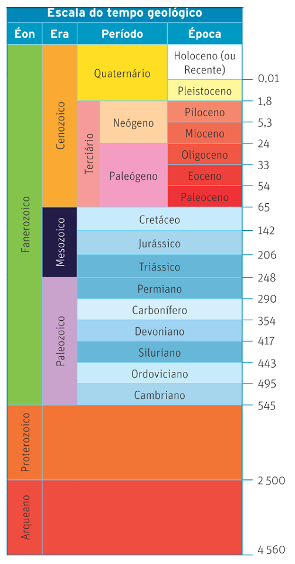
Eras Pré-Cambrianas
Essa escala do tempo geológico (lida de baixo para cima) inicia no período Arqueano. (A
soma do período Arqueano e Proterozóico é também chamado de Pré-Cambriano, referência a Cambria, nome antigo
do país de Gales onde foram encontradas primeiras rochas desse período, somente eles somam cerca de 90% de
toda a história da Terra!).
É nesse período em que ocorreu intenso vulcanismo e a formação da crosta terrestre (veremos
em seguida esse assunto). Nele, da mesma forma, aconteceu o aumento dos gases primitivos da atmosfera
(hidrogênio, amônia, sulfeto de hidrogênio) e as primeiras formas de vidas anaeróbia (que não
dependiam de oxigênio) os procariotas (células sem núcleo e assexuadas).
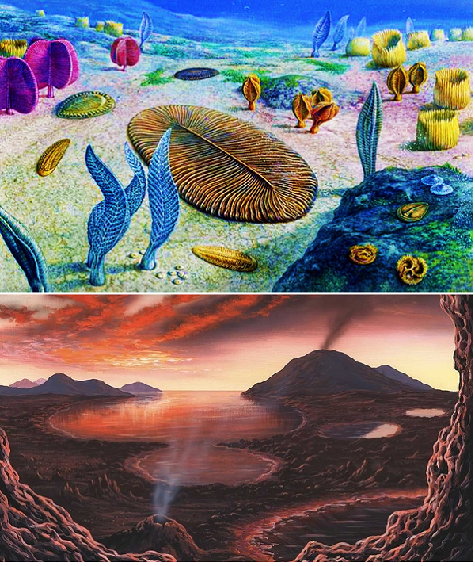
Fonte: Fonte: Wikipedia.
Já o período Proterozoico (com duração de cerca de 2 bilhões de anos) é marcado pela
existência e acúmulo de oxigênio na atmosfera e a formação dos primeiros vertebrados.
Era Paleozoica
Essas duas eras são os maiores da Terra. Após isso, há 545 milhões de anos inicia-se a era
Paleozoica (vida antiga) com algumas subdivisões em períodos: Cambriano, Ordoviciano, Siluriano, Devoniano,
Carbonífero e Permiano.
No primeiro período da era Paleozoica, o Cambriano, temos a diversificação
da vida marinha. Os fósseis encontrados nas rochas desse período estão relacionados aos cnidários (animais
aquáticos como águas-vivas, corais moles) e o mais famoso é o artrópode trilobita, conforme as imagens abaixo:
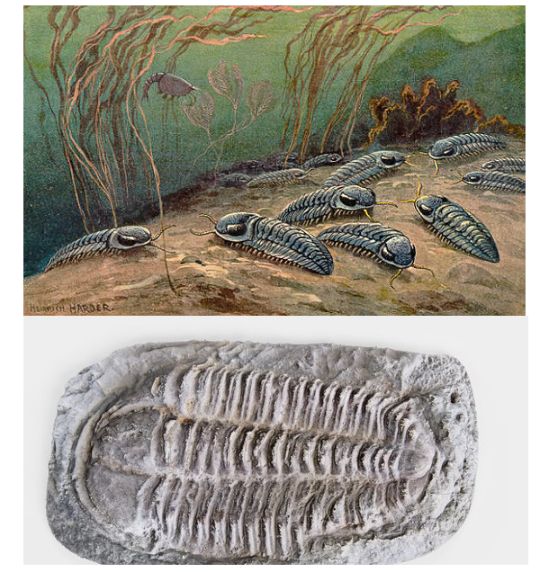
Fonte: Wikipedia.
E os cnidários:
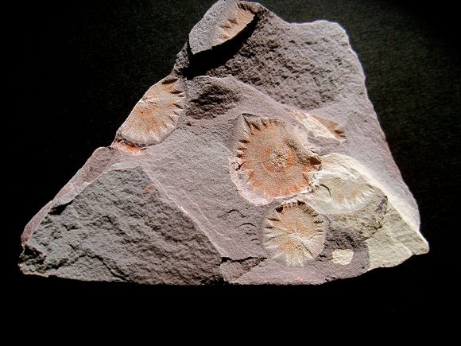
Fonte: Wikipedia.
No período Ordoviciano surgiram os primeiros peixes sem mandíbulas e o
evento mais significativo foi uma intensa glaciação que extinguiu 60% da vida marinha do Planeta.
No período seguinte, Siluriano, os fatores mais importantes foram as
maxilas nos peixes e a presença massiva de artrópodes em ambiente terrestre.
O período Devoniano é conhecido como a idade dos peixes. O clima da Terra
esquentou e ocorreu as primeiras divisões dos
continentes (assunto para as próximas aulas) em Euro americano, Gondwana e Siberiano.
Outra alteração climática diminuiu o nível dos oceanos e provocou a extinção de 80% das espécies nesse
período.
Já o período Carbonífero (300 milhões de anos) leva esse nome devido às
camadas de carvão que se originaram na Europa Central e no Reino Unido. É marcado pela evolução dos anfíbios
e pela formação das grandes jazidas de carvão.
O carvão mineral foi
formado há milhões de anos por um processo de soterramento da matéria orgânica como árvores e possui vários
estágios. É utilizado hoje como fonte de energia por termelétricas. (veremos nas próximas aulas mais sobre
esse tema).
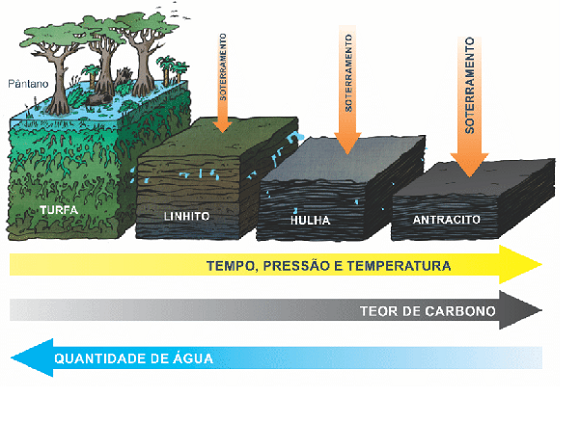
No último período da era Paleozoica, o Permiano (299-251 milhões de anos)
ocorreu a formação do supercontinente Pangeia, veja abaixo:
Na história da Terra, os continentes separaram-se e se juntaram diversas vezes. No final do
Permiano ocorreu outra extinção em massa da vida no Planeta de cerca de 70%. As causas para tal fato estão
relacionadas a constantes erupções vulcânicas, que produziram muitos gazes e cinzas, e a influência da
glaciação no continente Gondwana seriam os fatos mais marcantes para esse fenômeno.
Era Mesozoica
Chegamos ao fim da era Paleozoica com muitas transformações na estrutura da Terra. Agora começa outra era
chamada Mesozoica (248-65 milhões de anos), que duraria pouco mais de 180 milhões de anos.
Ela é conhecida como Idade dos dinossauros, igualmente marcada por outra
extinção em massa. Ela divide-se nos períodos: Triássico, Jurássico e Cretáceo.
O Triássico está ligado a formação das rochas sedimentares, aquelas que
são formados por sedimentos de outras rochas em camadas. Também é o início da fragmentação do
supercontinente Pangeia. Nesse período há a adaptação dos grandes répteis e sua diversificação. Também
ocorreu outra extinção de aproximadamente 35% dos seres vivos.
No período seguinte, o Jurássico, são formadas as jazidas de petróleo e
de gás natural e a ocorrência de grande diversificação da fauna marinha. O petróleo é formado pelo processo
de decomposição de matéria orgânica, restos de vegetais, algas, restos de animais marinhos e soterrado
durante milhões de anos.
Essa matéria orgânica em decomposição por bactérias anaeróbias e com alta pressão e
temperatura no fundo do mar. Parte desse petróleo pode ir para a terra, de acordo com o movimento das placas
tectônicas (esse assunto será visto adiante).
No último período da era Mesozoica, o Cretáceo (145-65 milhões de anos)
destacam-se as atividades tectônicas e a formação da Cordilheira dos Andes, os mamíferos de pequeno porte
que sobreviveram a extinção, e os mamíferos marsupiais. Houve uma proliferação dos insetos e a continuidade
da separação dos continentes.
A teoria mais aceita é a de que um asteroide de grandes proporções se chocou com a Terra.
Existe uma antiga cratera de impacto
soterrada de baixo da Península do Iucatã, no México. O seu centro está localizado próximo à localidade de
Chicxulub, que deu origem ao nome da cratera. Esse imenso buraco tem mais de 180 km de diâmetro, tornando-a
uma das maiores estruturas de impacto conhecidas no mundo.
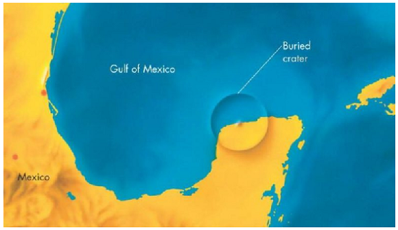
Fonte: https://ciberia.com.br. Localização da
Cratera de Chicxulub, resultado do impacto que extinguiu os dinossauros há 66 milhões de anos.
O impacto desse asteroide teria provocado uma intensa nuvem de poeira em quantidade
suficiente para encobrir toda a atmosfera, bloqueando a incidência da radiação solar na superfície terrestre
por anos (DAMBRÓS, 2017).
Com a diminuição da vegetação, os dinossauros ficaram sem alimento, assim como o elevado
grau de gases tóxicos na atmosfera derivado, igualmente, de atividade vulcânica colaboram para a explicação
do desaparecimento de uma espécie que habitou o Planeta por mais de 200 milhões de anos.
Era Cenozoica
A era mais recente denomina-se Cenozoica (vida nova). Ela é marcada pela
difusão dos mamíferos, do clima e vegetação tropicais, além da evolução da fauna e flora, populações de
espécies evoluem para se tornarem outras espécies, enfim, de toda biodiversidade.
É nesse período que ocorre a separação da Antártica e da Austrália. Grandes glaciações
ocorreram cobrindo o Planeta de gelo no Oligoceno e Mioceno. A evolução dos primatas no
Piloceno é significativa e junto com o aparecimento dos primeiros hominídeos. Da mesma
forma houve extinção em massa da fauna e da flora.
O holoceno é nossa época, a mais recente. É nela que vivemos, é o período
do surgimento do homem e da mudança do espaço geográfico através da ação humana em escala global.
Teste seu conhecimento
Teste seu conhecimento
Assinale verdadeiro ou falso para a afirmação a seguir: " A Era Mesozoica significa vida
intermediária. É quando surgiram grande atividade vulcânica no planeta e ocorreram a formação das bacias
sedimentares. Do mesmo modo, apareceram os primeiros mamíferos e aves, répteis gigantescos, como os
dinossauros, dentre outros".
Teste seu conhecimento
Paleozoica - Significa vida primitiva. É subdividida em era arqueozoica (vida arcaica com
o aparecimento dos primeiros organismos unicelulares (algas e bactérias, rochas magmáticas e metamórficas)
há 4,5 bilhões de anos. E Proterozoica (vida em desenvolvimento com a formação das rochas sedimentares e
aprimoramento da vida).
As camadas internas da Terra
Por dentro do Planeta
Vimos como a história da Terra é fascinante. Todas as transformações que ocorreram na
superfície do Planeta têm como origem, igualmente, o que se passa em seu interior, seja na atividade
vulcânica como na dinâmica da separação dos continentes.
Como é o interior do Planeta e como está estruturado?
Por que sai um líquido pastoso do interior da Terra pelos vulcões? O que há lá dentro?
Observe as imagens abaixo:
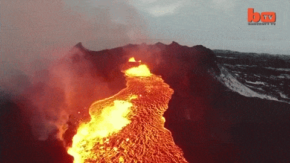
Somente com base na descrição da imagem é possível obter o conhecimento do que se passa em
seu interior? Ou é necessário algo mais? Essa algo mais seria um conjunto de hipóteses chamado de teoria e
testada na prática.
Na ciência, sabemos que o olho humano não é muito confiável, pode nos enganar na análise
dos fenômenos. Por isso, a maioria dos estudos sobre a estrutura interna da Terra se baseia na Geofísica,
destacando a Sismologia que estuda as ondas
sísmicas e suas fomras de propagação no interior do Planeta.
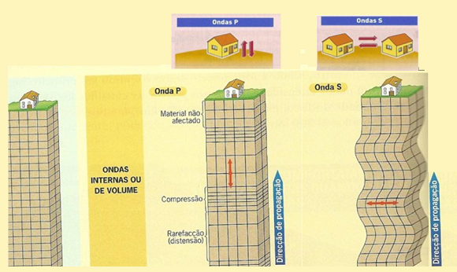
Fonte: www.slideplayer.com.br
/slide/10572117/
O modelo de estrutura
interna dividido em Crosta, Manto e Núcleo foi proposto em 1936 pela sismóloga dinamarquesa Inge Lehman e é
utilizado até hoje:
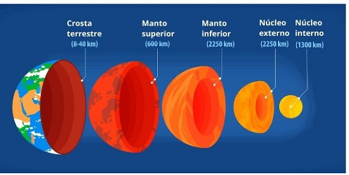
Fonte: www.mundoeducacao.uol.com.br
A crosta terrestre
A crosta é a parte externa da Terra e a mais fina com, aproximadamente 40 embaixo dos
continentes e chega a 70 km embaixo das montanhas. É dividida em crosta continental e oceânica.
Ela é composta por rochas graníticas e basálticas, com a presença de bastante sílica e
alumínio, além de ferro, sódio, potássio, cálcio (mais leve e menores temperaturas de fusão), por isso é
conhecida como SIAL.
Na parte inferior, o que inclui os oceanos com espessura de cerca de 8km, predominam os
silicatos e o elemento magnésio (SIMA). A crosta oceânica, apesar de mais fina do que a crosta continental,
é mais densa (peso maior).
O Manto
A próxima camada é o Manto. Também se divide em manto superior e inferior. O Manto
superior se estende até cerca de 400 km de profundidade. As ondas sísmicas indicam que quanto mais profundo
mais a densidade aumenta, ou seja, de pastoso, o manto adquire características mais sólidas.
O núcleo
A última camada é o núcleo. Ele é formado basicamente por ferro e níquel (NIFE). Na sua
parte externa, com espessura de cerca de 1700 km, e temperatura de, aproximadamente, de 4.000ºC, encontra-se
uma porção líquida.
No núcleo interna é onde há a maior densidade e temperatura em torno de 6.000ºC, formado
por ferro e níquel em estado sólido, com espessura de cerca de 3.700 km.
Áreas de descontinuidade
Antes de chegar ao limite com a próxima camada, que é o Manto, há uma descontinuidade
denominado Mohorovicic, em que as ondas
sísmicas P e S passam por uma mudança brusca de velocidade debaixo dos oceanos (cerca de 10km) e abaixo dos
continentes (30 a 50 km).
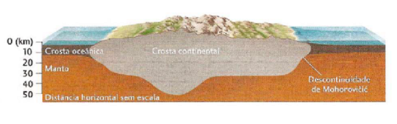
Fonte: Press et all (2006, p.532).
A crosta mais leve (menos densa) repousa sobre o manto mais denso e devido ao princípio de
isostasia, ou seja, o equilíbrio gravitacional entre a litosfera e o manto. Um exemplo seria afundar uma
cortiça na água e no melado e verificar a velocidade da subida da cortiça.
Já na transição entre o Manto e o Núcleo externo. entre 650 km até cerca de 2800 km, há uma
descontinuidade, isto é, uma transição chamada de Gutenberg.
Ela apresenta elementos químicos distintos provocados pela pressão e temperatura antes de
chegar ao núcleo terrestre. Da mesma forma, as ondas P (longitudinais) diminui sua velocidade, do mesmo
modo, as ondas S (transversais) não consegue atravessar a próxima camada. Veja na imagem:
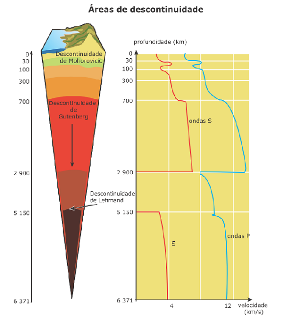
Movimento de convecção
O fato de existir altas temperaturas, pressão e rochas em estado pastoso no manto e núcleo
provoca os chamados movimentos de
convecção. Como a região próxima ao núcleo é mais quente, o magma sobe em
direção a crosta, que por sua vez, possui material “mais frio”, o qual desce para o interior retomando o
ciclo.
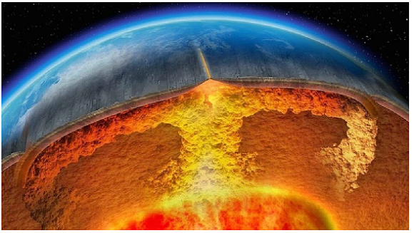
Fonte: www.conhecimentocientifico.r7.com
Campo magnético da Terra
Outra consequência do fato do núcleo da Terra ser formado por ferro e níquel é a formação
do campo magnético da Terra.
Devido ao movimento de rotação terrestre, visto nas aulas anteriores, as partículas de
ferro e níquel entram em atrito umas com as outras energizando-se e criando um campo magnético em volta da Terra, com o
polo norte localizado em nosso polo sul geográfico, conforme a figura abaixo.
Qual a importância do campo magnético para a Terra?
Grau geotérmico
É evidente que o interior da Terra possui calor, podemos visualizar esse fato através dos
vulcões, fontes quentes, temperaturas elevadas em minas ou quando perfuramos o solo.
À medida que atingimos uma determinada profundidade em direção ao interior do Planeta,
ocorre uma elevação de temperatura de 1º, entre 30 e 40 metros.
Essa medida chama-se grau geotérmico. De acordo com a composição das rochas que compõem a
litosfera, de sua idade o fluxo de calor oriundo do interior do Terra será mais ou menos elevado.
Teste sua habilidade
A figura abaixo ilustra qual tipo de fenômeno?
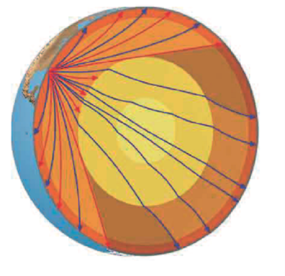
Teste seu conhecimento
A figura abaixo apresenta a distribuição percentual dos minerais na crosta terrestre e no
planeta.
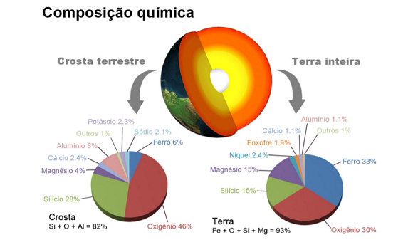
Quais elementos são predominantes na crosta terrestre e qual a importância desse
conhecimento?
Teste seu conhecimento
Sobre as camadas da Terra, marque a alternativa correta:
Crosta terrestre - Camada mais superficial da litosfera (camada sólida da Terra). Varia de
0 a 75 km de espessura. É dividida em crosta continental (mais espessa) e crosta oceânica (menos espessa). É
formada de minerais como silício e alumínio na sua parte superior e silício e magnésio em sua parte
inferior.
Núcleo externo - Segunda camada da Terra formada por rochas sólidas (oxigênio com ferro,
magnésio e sílica), semifundidas e fundidas. Varia de 70 a 2900 km de espessura. Os primeiros 700 km são
denominados de manto superior, enquanto os 2.200 km restantes são chamados de manto inferior.
Manto – Essa camada inicia com uma profundidade de, aproximadamente, 2900 km até 5400 km.
Encontra-se em estado líquido e é composto basicamente por ferro e níquel.
Núcleo interno - Camada mais profunda da Terra. Varia cerca de 5200 km a 6371 km de
espessura. Encontra-se em estado sólido.
Teste seu conhecimento
A figura abaixo mostra o planeta Terra em outra fase de sua evolução geológica em
comparação com a atual.
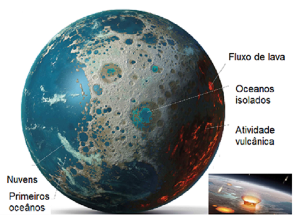
Não existe pergunta boba! A Ciência é feita de perguntas!
P:Como os cientistas fazem para
estudar o Planeta Terra?
R: Os cientistas em geral, e os geológicos em
particular, utilizam o método científico. Trata-se de construir argumentos baseados em hipóteses e conferir
se são verdadeiras ou falsas perante a realidade. Quando um conjunto de hipótese é confirmada, temos uma
teoria. Exemplo: Primeiro partimos de um problema (Como os continentes se movem sobre a superfície
terrestre?), após isso é criada uma hipótese (existem fósseis terrestres idênticos tanto na África como na
América do sul, os quais confirmam que existia um supercontinente). Após comprovarem a hipótese principal e
outras secundárias, elas tornam uma teoria.
P:Qual é a diferença entre tempo
geológico e tempo histórico?
R:O tempo geológico refere-se ao processo de surgimento,
formação e transformação do planeta Terra. Já o tempo histórico, por sua vez, está ligado ao surgimento das
civilizações humanas assim que começaram a estabelecer a escrita. O tempo geológico, conhecido como tempo
profundo, parte da ideia de que os processos geológicos não são observáveis, somente seus efeitos permanecem
como provas da sua antiguidade, e devem ser comparados com os fenômenos modernos. Mesmo com mais de 6 mil
anos de registros do ser humano sobre a Terra, não experimentamos toda a variedade e magnitude dos fenômenos
geológicos da Terra.
P: : O planeta Terra vai
acabar?
R: A Terra tem sua própria dinâmica, independente
daqueles que a habitam, no caso nós humanos e toda vida vegetal e animal. Vimos que houve diversos períodos
de extinção em massa dos seres vivos na história geológica da Terra. Ocorreram diversas mudanças globais em
diversas escalas temporais. Os continentes se separaram e depois formaram uma grande massa continental
novamente; o clima resfriou e as glaciações tomaram conta do planeta, o nível dos oceanos subiram e depois
desceram. Nesse sentido, os eventos, os ciclos, os processos que envolvem milhões de anos para acontecerem
continuarão a se manifestar, embora em um ritmo mais lento, devido ao próprio resfriamento da Terra e
diminuição de seu processo radioativo em seu interior.
Desafio em grupo: Exposição de ideias sobre a dinâmica do Planeta Terra.
Escolha um período ou um fato marcante apresentado nas Eras geológicas da Terra e
apresenta
três argumentos sobre a importância do conhecimento das dinâmicas do Planeta atualmente.
Instruções
Forme um grupo com três estudantes;
Selecione os fatos e discuta com seu grupo os argumentos da questão; (5 minutos);
Escreva sua resposta à questão solicitada.
Escolha um integrante do grupo para expor a questão a turma; (1 a 2 minutos).